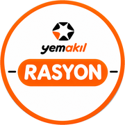

YemAkılv232Irk ve verim
Referanslar NASEM (2021) denklemleriyle hesaplanır: yem tüketimi (doğum sayısı, kondisyon, süt enerjisi, laktasyon günü), idame, süt ve gebelik ihtiyacı. Gebelik günü 190 ve üstünde gebelik ihtiyacı eklenir; 0 bırakırsanız boş sayılır. Aktivite ve büyüme dahil değildir.
Hedefleri düzenle
Çiftlikte kullandığınız hammaddeleri işaretleyin, rasyon listesine eklenir. Mısır silajı, yonca ve küspe gibi hammaddelerin farklı KM ve kalite çeşitleri referans analiz değerleriyle hazır. Düzenle ile fiyat ve kendi analiz sonucunuzu girin. "Feedipedia" etiketli çeşitler INRAE/CIRAD/AFZ/FAO veritabanı ortalamalarıdır (KM bazında; ME MJ'den Mcal'e çevrildi). "Genel tahmin" notlu olanlar henüz doğrulanmadı. Yemci Bey raporlarından eklenenlerde protein, lif ve mineraller kuru maddeye çevrildi; ME rapordaki değerle alındı.
Çiftlikte verilen rasyon
Baş başına günlük yaş miktar (kg) ve fiyat (TL/kg).
Başka bölümdeki rasyonu buraya kopyala
Aynı yem listesini başka bir hayvan grubunda (besi, küçükbaş, buzağı) hazırladıysanız buraya taşır. Çoğu zaman gerekmez.
TMR elek testi
Yemlikten, hayvanlar ayıklamadan önce alınan örnekte her elekte kalan yüzdeyi girin (Penn State, yüksek verimli inek aralıkları).
Sıfırdan en ucuz karışım (ileri)
Yukarıdaki Çözüm asistanı mevcut rasyonunuzu düzeltir; çoğu durumda o yeterlidir. Bu bölüm ise mevcut rasyonu yok sayar: "Hedefleri düzenle" değerlerine göre seçili hammaddelerden ve fabrika yemlerimizden yüzde bazlı en düşük maliyetli yeni bir karışım kurar (yalnız enerji, protein, NDF, Ca, P ve kaba yem en az değerlerini denetler). Fiyatı girilmemiş yem için benzer yemlerin ortalama fiyatı (tahmini) kullanılır ve sonuçta yazılır.
Yedekleme: verilerinizi dosyaya kaydedin
Tüm kayıtlarınız (rasyonlar, formüller, etiketler, premiks reçeteleri, aşı kayıtları, hammadde fiyatları) yalnız bu telefonun tarayıcısında durur. Telefon değişirse veya tarayıcı verisi silinirse kaybolur. Her değişiklikten birkaç saniye sonra telefonda otomatik yedek alınır (YemAkıl giriş sayfası → Yedekler; yanlışlıkla silmeye karşı). Telefon kaybolursa diye haftada bir "Yedek al" ile dosyayı Google Drive, WhatsApp veya e-postanıza gönderin. Yedekte yapay zekâ (API) anahtarı bulunmaz.
Varsayılan besin değerleri ve fiyatlar yaklaşık örneklerdir. Uygulamadan önce hammadde analizlerinizle ve bir hayvan besleme uzmanıyla doğrulayın.